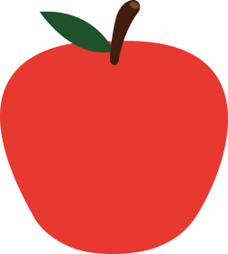
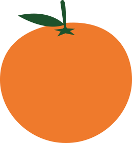
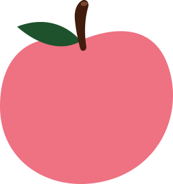
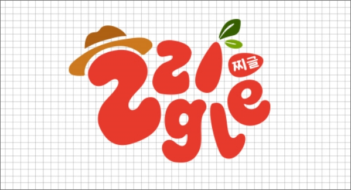

찌글은요!
완벽한 외형이 아니라는 이유로 버려지는 농산물이 전체 농산물의 3/1이나 된다는 사실을 아시나요?
게다가 버려진 농산물은 폐기가 되는데 농산물의 폐기는 온실가스를 배출해 환경을 오염시키고, 생산에 투입된 과 비료, 노동력의 낭비로 직결돼 큰
사회적·경제적·환경적
손실을 준답니다!
찌글은 못생겼다는 이유만으로 버려지는 농산물들을 여러분과 만날 수 있도록 하기 위해 만들어진 사이트입니다!
못생겨도 맛있고 건강한 찌글의 농산물들을 만나보세요!
못난이 농산물의 장점은?
못난이 농산물을 구매하면 환경을 보호할 수 있어요! 예쁘지 않다는 이유로 버려지는 농산물이 많지만, 못난이 농산물의 폐기를 막음으로써 물, 플라스틱, 탄소 사용을 절감할 수 있어요! 지구를 아끼는 착한 소비, 멋지지 않나요?
못난이 농산물은 못생겼다는 이유로 시장에서 조금 저렴하게 판매되는 경우가 많아요. 신선하고 맛있는 유기농 농산물을 합리적인 가격으로 만날 수 있어요!
못난이 농산물도 예쁘게 생긴 농산물과 똑같이 건강하고 맛있어요. 사실, 모양만 조금 다를 뿐이지, 영양과 맛에서는 전혀 손색이 없답니다!
못난이 농산물은 외모와 상관없이 정말 많은 장점을 가지고 있어요. 이제 못난이 농산물의 매력을 듬뿍 느끼셨나요?
건강하고 착한 소비를 통해 못난이 농산물의 가치를 함께 발견해보아요!
찌글의 식품은 건강을 가장 중요하게 생각해요. 인공 첨가물과 방부제는 가라!
자연 그대로의 맛과 영양을 살린 제품만 제공한답니다.
바쁜 일상 속에서도 균형 잡힌 식사를 통해 건강을 챙길 수 있도록, 열심히 연구하고 있어요.
자연 속에서 푸릇푸릇 자란 유기농 못난이 농산물의 변신을 이제 식탁에서 만나보세요!
-

식품 낭비 감소
못난이 농산물의장점을 알리고, 소비자들이 구매하도록 함으로써 식품 낭비를 줄이고 자원을 효율적으로 사용할 수 있게해요!
-

환경 보호 실천
농업 자원을 절약하고 탄소 발자국을 줄이는 데 기여해요. 또한, 친환경 포장재 사용을 통해 플라스틱 쓰레기를 줄이고, 지속 가능한 농업을 지원해요!
-

지역 농가 지원
지역 농부들과 협력하여 그들의 못난이 농산물을 구매하고, 이를 통해 농가의 경제적 안정을 도와요. 이를 통해 지역 경제를 활성화하고, 지속 가능한 농업 환경을 조성해요!
못생긴게 어때서? 신선하고 맛있는 우리 농산물
귀여운 못난이 농산물씨들을 소개할게요!


ZZigle's BI
Logo Type
- 
-

찌글의 로고는 못난이 농산물의 컨셉에 맞게 ZZIgle을 들쑥날쑥하게 배치하고,
ZZIgle의 타이포에 농부모자와 이파리를 결합하여 농산물의 느낌을 강조하였습니다.
Color Pallet
-
#E73A2D
-
#AE6113
-
#CC781E
-
#77A404
-
#355E00